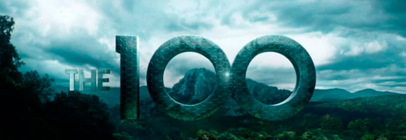
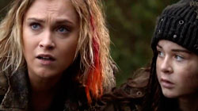
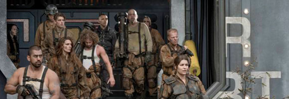

Todo sobre "the 100" temporada 5
Al final de la cuarta temporada de The 100, con la ola de radiación – también llamada Praimfaya – cerca, Octavia (Marie Avgeropoulos ) y un grupo contado de terrícolas se encerraron en un búnker debajo de Polis, mientras Raven (Lindsey Morgan ), Bellamy (Bob Morley ), Monty (Christopher Larkin ), Harper (Chelsey Reist), Murphy (Richard Harmon), Emori (Luisa D’Oliveira) y Echo (Tasya Teles) viajaron al espacio exterior para salvarse.
Solo Clarke (Eliza Taylor ) se quedó en el exterior, pero sobrevivió al golpe radiactivo y seis años después, reapareció como la madre adoptiva de una niña, que al igual que ella es una Nightblood. Y juntas fueron testigos de la llegada de una nueva amenaza a la Tierra. La quinta entrega de la serie de The CW será estrenada el próximo 24 de abril en Estados Unidos, y en ella conoceremos a los prisioneros que abandonaron el planeta antes del primer apocalipsis, hace más de 100 años, y que llegan en la nave vista al final de la cuarta temporada
“La nave prisión es de la Tierra. Son de nuestro tiempo, así que son de antes del primer apocalipsis. Eso significa que probablemente han estado criogenizados. Ellos estaban durmiendo y han regresado a este planeta que no reconocen, que ha sido destruido. Todo lo que queda es este jardín del Edén en el que Clarke ha estado viviendo y no hay suficiente espacio para todos”, indicó el productor ejecutivo Jason Rothenberg en la Comic-Con 2017.
En el tráiler de la nueva temporada de The 100 Clarke dice que planea matar a cualquier persona que amenace a Maddie (Imogen Tear), la niña a la que ha cuidado durante los últimos seis años.
“Es agradable estar actuando con alguien un poco más cerca de mi edad. Es emocionante verme como una mujer de 24 años que ha pasado por tanto y que ahora está asumiendo este papel maternal, cuidando a esta pequeña Nightblood”, explicó Eliza Taylor .
Pero Clarke no será la única que asumirá un rol maternal. Octavia será la líder de los sobrevivientes del búnker, que continúan bajo tierra al empezar la quinta temporada. “Octavia no tiene ni idea de lo que está haciendo, pero no quiere desencadenar el caos sobe las 1.200 personas en el búnker. No se puede simplemente correr, romper las leyes y causar disturbios. En la temporada 5 verán cuál es el plan de Octavia para mantener la paz y cómo ella reprime a los demás a su manera especial”, indicó la actriz Marie Avgeropoulos.
NUEVOS PERSONAJES

Para su quinta temporada, The 100 ha reunido a algunos otros actores para reforzar el elenco. ¿A quiénes? Mike Dopud (Power) como un asesino en serie llamado Vinson, Lola Flanery (Shadowhunters) como la ‘hija’ de Clarke, Maddie, Jordan Bolger (Peaky Blinders) como un engreído explorador espacial llamado Zeke, Ivana Milicevic (Banshee) como la estratega militar Charmaine y el actor español William Miller como el nuevo gran villano del show.